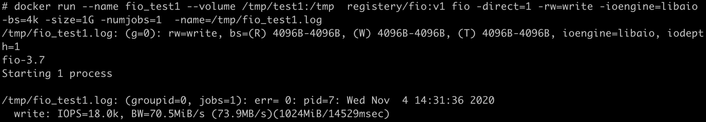
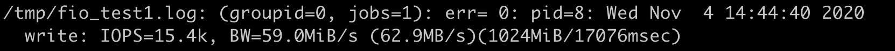
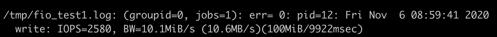
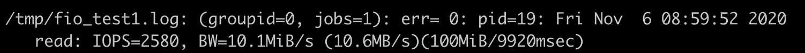
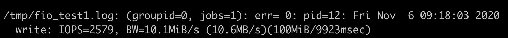
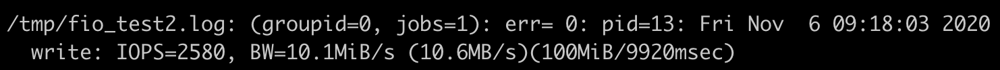
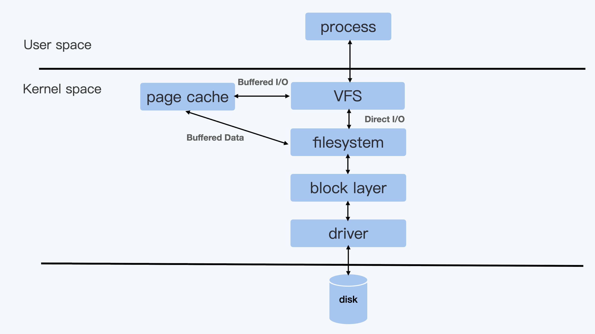
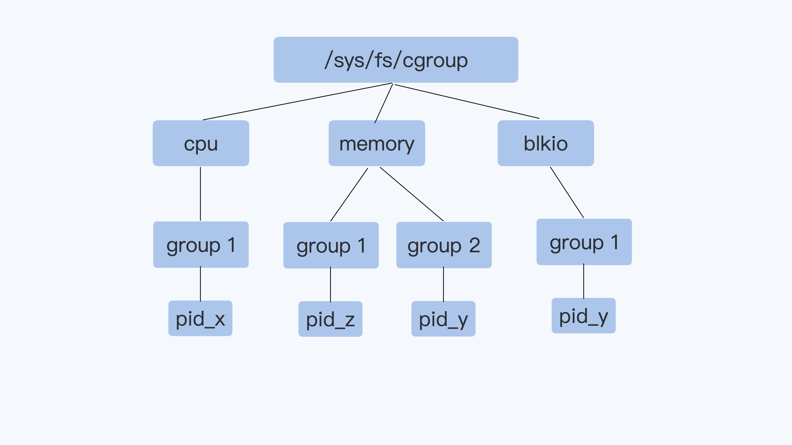
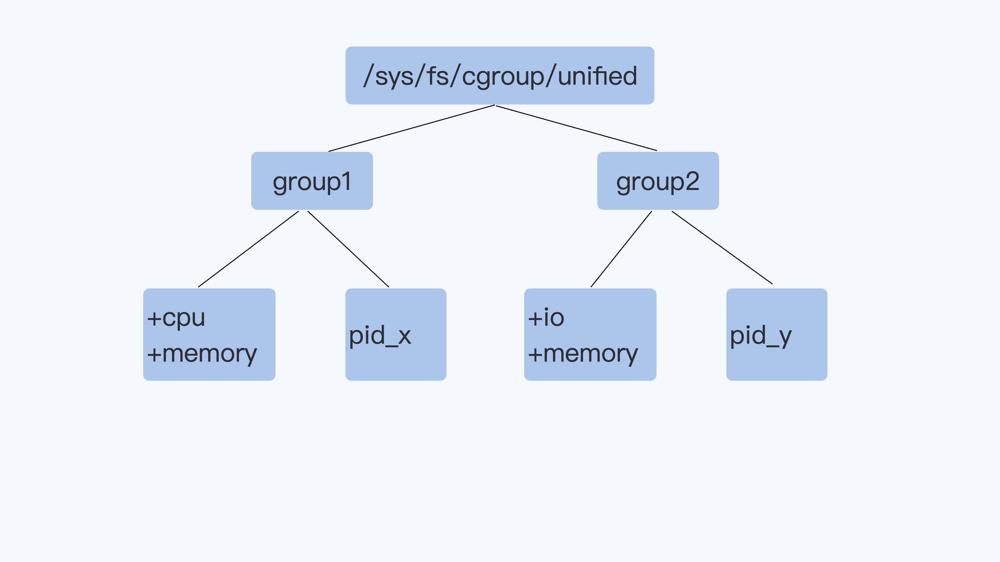
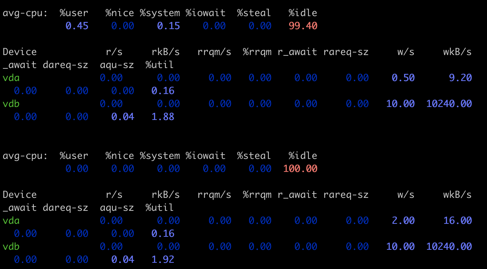

- 00 开篇词 一个态度两个步骤，成为容器实战高手.md.html
- 01 认识容器：容器的基本操作和实现原理.md.html
- 02 理解进程（1）：为什么我在容器中不能kill 1号进程？.md.html
- 03 理解进程（2）：为什么我的容器里有这么多僵尸进程？.md.html
- 04 理解进程（3）：为什么我在容器中的进程被强制杀死了？.md.html
- 05 容器CPU（1）：怎么限制容器的CPU使用？.md.html
- 06 容器CPU（2）：如何正确地拿到容器CPU的开销？.md.html
- 07 Load Average：加了CPU Cgroup限制，为什么我的容器还是很慢？.md.html
- 08 容器内存：我的容器为什么被杀了？.md.html
- 09 Page Cache：为什么我的容器内存使用量总是在临界点.md.html
- 10 Swap：容器可以使用Swap空间吗？.md.html
- 11 容器文件系统：我在容器中读写文件怎么变慢了.md.html
- 12 容器文件Quota：容器为什么把宿主机的磁盘写满了？.md.html
- 13 容器磁盘限速：我的容器里磁盘读写为什么不稳定.md.html
- 14 容器中的内存与IO：容器写文件的延时为什么波动很大？.md.html
- 15 容器网络：我修改了procsysnet下的参数，为什么在容器中不起效？.md.html
- 16 容器网络配置（1）：容器网络不通了要怎么调试.md.html
- 17 容器网络配置（2）：容器网络延时要比宿主机上的高吗.md.html
- 18 容器网络配置（3）：容器中的网络乱序包怎么这么高？.md.html
- 19 容器安全（1）：我的容器真的需要privileged权限吗.md.html
- 20 容器安全（2）：在容器中，我不以root用户来运行程序可以吗？.md.html
- 加餐01 案例分析：怎么解决海量IPVS规则带来的网络延时抖动问题？.md.html
- 加餐02 理解perf：怎么用perf聚焦热点函数？.md.html
- 加餐03 理解ftrace（1）：怎么应用ftrace查看长延时内核函数？.md.html
- 加餐04 理解ftrace（2）：怎么理解ftrace背后的技术tracepoint和kprobe？.md.html
- 加餐05 eBPF：怎么更加深入地查看内核中的函数？.md.html
- 加餐06 BCC：入门eBPF的前端工具.md.html
- 加餐福利 课后思考题答案合集.md.html
- 结束语 跳出舒适区，突破思考的惰性.md.html
13 容器磁盘限速：我的容器里磁盘读写为什么不稳定
你好，我是程远。今天我们聊一聊磁盘读写不稳定的问题。
上一讲，我给你讲了如何通过 XFS Quota 来限制容器文件系统的大小，这是静态容量大小的一个限制。
你也许会马上想到，磁盘除了容量的划分，还有一个读写性能的问题。
具体来说，就是如果多个容器同时读写节点上的同一块磁盘，那么它们的磁盘读写相互之间影响吗？如果容器之间读写磁盘相互影响，我们有什么办法解决呢？
接下来，我们就带着问题一起学习今天的内容。
场景再现
我们先用这里的代码，运行一下 make image 来做一个带 fio 的容器镜像，fio 在我们之前的课程里提到过，它是用来测试磁盘文件系统读写性能的工具。
有了这个带 fio 的镜像，我们可以用它启动一个容器，在容器中运行 fio，就可以得到只有一个容器读写磁盘时的性能数据。
mkdir -p /tmp/test1
docker stop fio_test1;docker rm fio_test1
docker run --name fio_test1 --volume /tmp/test1:/tmp registery/fio:v1 fio -direct=1 -rw=write -ioengine=libaio -bs=4k -size=1G -numjobs=1 -name=/tmp/fio_test1.log
上面的这个 Docker 命令，我给你简单地解释一下：在这里我们第一次用到了"--volume"这个参数。之前我们讲过容器文件系统，比如 OverlayFS。
不过容器文件系统并不适合频繁地读写。对于频繁读写的数据，容器需要把他们到放到"volume"中。这里的 volume 可以是一个本地的磁盘，也可以是一个网络磁盘。
在这个例子里我们就使用了宿主机本地磁盘，把磁盘上的 /tmp/test1 目录作为 volume 挂载到容器的 /tmp 目录下。
然后在启动容器之后，我们直接运行 fio 的命令，这里的参数和我们第 11 讲最开始的例子差不多，只是这次我们运行的是 write，也就是写磁盘的操作，而写的目标盘就是挂载到 /tmp 目录的 volume。
可以看到，fio 的运行结果如下图所示，IOPS 是 18K，带宽 (BW) 是 70MB/s 左右。

好了，刚才我们模拟了一个容器写磁盘的性能。那么如果这时候有两个容器，都在往同一个磁盘上写数据又是什么情况呢？我们可以再用下面的这个脚本试一下：
mkdir -p /tmp/test1
mkdir -p /tmp/test2
docker stop fio_test1;docker rm fio_test1
docker stop fio_test2;docker rm fio_test2
docker run --name fio_test1 --volume /tmp/test1:/tmp registery/fio:v1 fio -direct=1 -rw=write -ioengine=libaio -bs=4k -size=1G -numjobs=1 -name=/tmp/fio_test1.log &
docker run --name fio_test2 --volume /tmp/test2:/tmp registery/fio:v1 fio -direct=1 -rw=write -ioengine=libaio -bs=4k -size=1G -numjobs=1 -name=/tmp/fio_test2.log &
这时候，我们看到的结果，在容器 fio_test1 里，IOPS 是 15K 左右，带宽是 59MB/s 了，比之前单独运行的时候性能下降了不少。

显然从这个例子中，我们可以看到多个容器同时写一块磁盘的时候，它的性能受到了干扰。那么有什么办法可以保证每个容器的磁盘读写性能呢？
之前，我们讨论过用 Cgroups 来保证容器的 CPU 使用率，以及控制 Memroy 的可用大小。那么你肯定想到了，我们是不是也可以用 Cgroups 来保证每个容器的磁盘读写性能？
没错，在 Cgroup v1 中有 blkio 子系统，它可以来限制磁盘的 I/O。不过 blkio 子系统对于磁盘 I/O 的限制，并不像 CPU，Memory 那么直接，下面我会详细讲解。
知识详解
Blkio Cgroup
在讲解 blkio Cgroup 前，我们先简单了解一下衡量磁盘性能的两个常见的指标 IOPS 和吞吐量（Throughput）是什么意思，后面讲 Blkio Cgroup 的参数配置时会用到。
IOPS 是 Input/Output Operations Per Second 的简称，也就是每秒钟磁盘读写的次数，这个数值越大，当然也就表示性能越好。
吞吐量（Throughput）是指每秒钟磁盘中数据的读取量，一般以 MB/s 为单位。这个读取量可以叫作吞吐量，有时候也被称为带宽（Bandwidth）。刚才我们用到的 fio 显示结果就体现了带宽。
IOPS 和吞吐量之间是有关联的，在 IOPS 固定的情况下，如果读写的每一个数据块越大，那么吞吐量也越大，它们的关系大概是这样的：吞吐量 = 数据块大小 *IOPS。
好，那么我们再回到 blkio Cgroup 这个概念上，blkio Cgroup 也是 Cgroups 里的一个子系统。 在 Cgroups v1 里，blkio Cgroup 的虚拟文件系统挂载点一般在"/sys/fs/cgroup/blkio/"。
和我之前讲过的 CPU，memory Cgroup 一样，我们在这个"/sys/fs/cgroup/blkio/"目录下创建子目录作为控制组，再把需要做 I/O 限制的进程 pid 写到控制组的 cgroup.procs 参数中就可以了。
在 blkio Cgroup 中，有四个最主要的参数，它们可以用来限制磁盘 I/O 性能，我列在了下面。
blkio.throttle.read_iops_device
blkio.throttle.read_bps_device
blkio.throttle.write_iops_device
blkio.throttle.write_bps_device
前面我们刚说了磁盘 I/O 的两个主要性能指标 IOPS 和吞吐量，在这里，根据这四个参数的名字，估计你已经大概猜到它们的意思了。
没错，它们分别表示：磁盘读取 IOPS 限制，磁盘读取吞吐量限制，磁盘写入 IOPS 限制，磁盘写入吞吐量限制。
对于每个参数写入值的格式，你可以参考内核blkio 的文档。为了让你更好地理解，在这里我给你举个例子。
如果我们要对一个控制组做限制，限制它对磁盘 /dev/vdb 的写入吞吐量不超过 10MB/s，那么我们对 blkio.throttle.write_bps_device 参数的配置就是下面这个命令。
echo "252:16 10485760" > $CGROUP_CONTAINER_PATH/blkio.throttle.write_bps_device
在这个命令中，"252:16"是 /dev/vdb 的主次设备号，你可以通过 ls -l /dev/vdb 看到这两个值，而后面的"10485760"就是 10MB 的每秒钟带宽限制。
# ls -l /dev/vdb -l
brw-rw---- 1 root disk 252, 16 Nov 2 08:02 /dev/vdb
了解了 blkio Cgroup 的参数配置，我们再运行下面的这个例子，限制一个容器 blkio 的读写磁盘吞吐量，然后在这个容器里运行一下 fio，看看结果是什么。
mkdir -p /tmp/test1
rm -f /tmp/test1/*
docker stop fio_test1;docker rm fio_test1
docker run -d --name fio_test1 --volume /tmp/test1:/tmp registery/fio:v1 sleep 3600
sleep 2
CONTAINER_ID=$(sudo docker ps --format "{{.ID}}\t{{.Names}}" | grep -i fio_test1 | awk '{print $1}')
echo $CONTAINER_ID
CGROUP_CONTAINER_PATH=$(find /sys/fs/cgroup/blkio/ -name "*$CONTAINER_ID*")
echo $CGROUP_CONTAINER_PATH
# To get the device major and minor id from /dev for the device that /tmp/test1 is on.
echo "253:0 10485760" > $CGROUP_CONTAINER_PATH/blkio.throttle.read_bps_device
echo "253:0 10485760" > $CGROUP_CONTAINER_PATH/blkio.throttle.write_bps_device
docker exec fio_test1 fio -direct=1 -rw=write -ioengine=libaio -bs=4k -size=100MB -numjobs=1 -name=/tmp/fio_test1.log
docker exec fio_test1 fio -direct=1 -rw=read -ioengine=libaio -bs=4k -size=100MB -numjobs=1 -name=/tmp/fio_test1.log
在这里，我的机器上 /tmp/test1 所在磁盘主次设备号是”253:0”，你在自己运行这组命令的时候，需要把主次设备号改成你自己磁盘的对应值。
还有一点我要提醒一下，不同数据块大小，在性能测试中可以适用于不同的测试目的。但因为这里不是我们要讲的重点，所以为了方便你理解概念，这里就用固定值。
在我们后面的例子里，fio 读写的数据块都固定在 4KB。所以对于磁盘的性能限制，我们在 blkio Cgroup 里就只设置吞吐量限制了。
在加了 blkio Cgroup 限制 10MB/s 后，从 fio 运行后的输出结果里，我们可以看到这个容器对磁盘无论是读还是写，它的最大值就不会再超过 10MB/s 了。


在给每个容器都加了 blkio Cgroup 限制，限制为 10MB/s 后，即使两个容器同时在一个磁盘上写入文件，那么每个容器的写入磁盘的最大吞吐量，也不会互相干扰了。
我们可以用下面的这个脚本来验证一下。
# !/bin/bash
mkdir -p /tmp/test1
rm -f /tmp/test1/*
docker stop fio_test1;docker rm fio_test1
mkdir -p /tmp/test2
rm -f /tmp/test2/*
docker stop fio_test2;docker rm fio_test2
docker run -d --name fio_test1 --volume /tmp/test1:/tmp registery/fio:v1 sleep 3600
docker run -d --name fio_test2 --volume /tmp/test2:/tmp registery/fio:v1 sleep 3600
sleep 2
CONTAINER_ID1=$(sudo docker ps --format "{{.ID}}\t{{.Names}}" | grep -i fio_test1 | awk '{print $1}')
echo $CONTAINER_ID1
CGROUP_CONTAINER_PATH1=$(find /sys/fs/cgroup/blkio/ -name "*$CONTAINER_ID1*")
echo $CGROUP_CONTAINER_PATH1
# To get the device major and minor id from /dev for the device that /tmp/test1 is on.
echo "253:0 10485760" > $CGROUP_CONTAINER_PATH1/blkio.throttle.read_bps_device
echo "253:0 10485760" > $CGROUP_CONTAINER_PATH1/blkio.throttle.write_bps_device
CONTAINER_ID2=$(sudo docker ps --format "{{.ID}}\t{{.Names}}" | grep -i fio_test2 | awk '{print $1}')
echo $CONTAINER_ID2
CGROUP_CONTAINER_PATH2=$(find /sys/fs/cgroup/blkio/ -name "*$CONTAINER_ID2*")
echo $CGROUP_CONTAINER_PATH2
# To get the device major and minor id from /dev for the device that /tmp/test1 is on.
echo "253:0 10485760" > $CGROUP_CONTAINER_PATH2/blkio.throttle.read_bps_device
echo "253:0 10485760" > $CGROUP_CONTAINER_PATH2/blkio.throttle.write_bps_device
docker exec fio_test1 fio -direct=1 -rw=write -ioengine=libaio -bs=4k -size=100MB -numjobs=1 -name=/tmp/fio_test1.log &
docker exec fio_test2 fio -direct=1 -rw=write -ioengine=libaio -bs=4k -size=100MB -numjobs=1 -name=/tmp/fio_test2.log &
我们还是看看 fio 运行输出的结果，这时候，fio_test1 和 fio_test2 两个容器里执行的结果都是 10MB/s 了。


那么做到了这一步，我们是不是就可以认为，blkio Cgroup 可以完美地对磁盘 I/O 做限制了呢？
你先别急，我们可以再做个试验，把前面脚本里 fio 命令中的 “-direct=1” 给去掉，也就是不让 fio 运行在 Direct I/O 模式了，而是用 Buffered I/O 模式再运行一次，看看 fio 执行的输出。
同时我们也可以运行 iostat 命令，查看实际的磁盘写入速度。
这时候你会发现，即使我们设置了 blkio Cgroup，也根本不能限制磁盘的吞吐量了。
Direct I/O 和 Buffered I/O
为什么会这样的呢？这就要提到 Linux 的两种文件 I/O 模式了：Direct I/O 和 Buffered I/O。
Direct I/O 模式，用户进程如果要写磁盘文件，就会通过 Linux 内核的文件系统层 (filesystem) -> 块设备层 (block layer) -> 磁盘驱动 -> 磁盘硬件，这样一路下去写入磁盘。
而如果是 Buffered I/O 模式，那么用户进程只是把文件数据写到内存中（Page Cache）就返回了，而 Linux 内核自己有线程会把内存中的数据再写入到磁盘中。在 Linux 里，由于考虑到性能问题，绝大多数的应用都会使用 Buffered I/O 模式。

我们通过前面的测试，发现 Direct I/O 可以通过 blkio Cgroup 来限制磁盘 I/O，但是 Buffered I/O 不能被限制。
那通过上面的两种 I/O 模式的解释，你是不是可以想到原因呢？是的，原因就是被 Cgroups v1 的架构限制了。
我们已经学习过了 v1 的 CPU Cgroup，memory Cgroup 和 blkio Cgroup，那么 Cgroup v1 的一个整体结构，你应该已经很熟悉了。它的每一个子系统都是独立的，资源的限制只能在子系统中发生。
就像下面图里的进程 pid_y，它可以分别属于 memory Cgroup 和 blkio Cgroup。但是在 blkio Cgroup 对进程 pid_y 做磁盘 I/O 做限制的时候，blkio 子系统是不会去关心 pid_y 用了哪些内存，哪些内存是不是属于 Page Cache，而这些 Page Cache 的页面在刷入磁盘的时候，产生的 I/O 也不会被计算到进程 pid_y 上面。
就是这个原因，导致了 blkio 在 Cgroups v1 里不能限制 Buffered I/O。

这个 Buffered I/O 限速的问题，在 Cgroup V2 里得到了解决，其实这个问题也是促使 Linux 开发者重新设计 Cgroup V2 的原因之一。
Cgroup V2
Cgroup v2 相比 Cgroup v1 做的最大的变动就是一个进程属于一个控制组，而每个控制组里可以定义自己需要的多个子系统。
比如下面的 Cgroup V2 示意图里，进程 pid_y 属于控制组 group2，而在 group2 里同时打开了 io 和 memory 子系统 （Cgroup V2 里的 io 子系统就等同于 Cgroup v1 里的 blkio 子系统）。
那么，Cgroup 对进程 pid_y 的磁盘 I/O 做限制的时候，就可以考虑到进程 pid_y 写入到 Page Cache 内存的页面了，这样 buffered I/O 的磁盘限速就实现了。

下面我们在 Cgroup v2 里，尝试一下设置了 blkio Cgroup+Memory Cgroup 之后，是否可以对 Buffered I/O 进行磁盘限速。
我们要做的第一步，就是在 Linux 系统里打开 Cgroup v2 的功能。因为目前即使最新版本的 Ubuntu Linux 或者 Centos Linux，仍然在使用 Cgroup v1 作为缺省的 Cgroup。
打开方法就是配置一个 kernel 参数"cgroup_no_v1=blkio,memory"，这表示把 Cgroup v1 的 blkio 和 Memory 两个子系统给禁止，这样 Cgroup v2 的 io 和 Memory 这两个子系统就打开了。
我们可以把这个参数配置到 grub 中，然后我们重启 Linux 机器，这时 Cgroup v2 的 io 还有 Memory 这两个子系统，它们的功能就打开了。
系统重启后，我们会看到 Cgroup v2 的虚拟文件系统被挂载到了 /sys/fs/cgroup/unified 目录下。
然后，我们用下面的这个脚本做 Cgroup v2 io 的限速配置，并且运行 fio，看看 buffered I/O 是否可以被限速。
# Create a new control group
mkdir -p /sys/fs/cgroup/unified/iotest
# enable the io and memory controller subsystem
echo "+io +memory" > /sys/fs/cgroup/unified/cgroup.subtree_control
# Add current bash pid in iotest control group.
# Then all child processes of the bash will be in iotest group too,
# including the fio
echo $$ >/sys/fs/cgroup/unified/iotest/cgroup.procs
# 256:16 are device major and minor ids, /mnt is on the device.
echo "252:16 wbps=10485760" > /sys/fs/cgroup/unified/iotest/io.max
cd /mnt
#Run the fio in non direct I/O mode
fio -iodepth=1 -rw=write -ioengine=libaio -bs=4k -size=1G -numjobs=1 -name=./fio.test
在这个例子里，我们建立了一个名叫 iotest 的控制组，并且在这个控制组里加入了 io 和 Memory 两个控制子系统，对磁盘最大吞吐量的设置为 10MB。运行 fio 的时候不加"-direct=1"，也就是让 fio 运行在 buffered I/O 模式下。
运行 fio 写入 1GB 的数据后，你会发现 fio 马上就执行完了，因为系统上有足够的内存，fio 把数据写入内存就返回了，不过只要你再运行”iostat -xz 10” 这个命令，你就可以看到磁盘 vdb 上稳定的写入速率是 10240wkB/s，也就是我们在 io Cgroup 里限制的 10MB/s。

看到这个结果，我们证实了 Cgoupv2 io+Memory 两个子系统一起使用，就可以对 buffered I/O 控制磁盘写入速率。
重点总结
这一讲，我们主要想解决的问题是如何保证容器读写磁盘速率的稳定，特别是当多个容器同时读写同一个磁盘的时候，需要减少相互的干扰。
Cgroup V1 的 blkiio 控制子系统，可以用来限制容器中进程的读写的 IOPS 和吞吐量（Throughput），但是它只能对于 Direct I/O 的读写文件做磁盘限速，对 Buffered I/O 的文件读写，它无法进行磁盘限速。
这是因为 Buffered I/O 会把数据先写入到内存 Page Cache 中，然后由内核线程把数据写入磁盘，而 Cgroup v1 blkio 的子系统独立于 memory 子系统，无法统计到由 Page Cache 刷入到磁盘的数据量。
这个 Buffered I/O 无法被限速的问题，在 Cgroup v2 里被解决了。Cgroup v2 从架构上允许一个控制组里有多个子系统协同运行，这样在一个控制组里只要同时有 io 和 Memory 子系统，就可以对 Buffered I/O 作磁盘读写的限速。
虽然 Cgroup v2 解决了 Buffered I/O 磁盘读写限速的问题，但是在现实的容器平台上也不是能够立刻使用的，还需要等待一段时间。目前从 runC、containerd 到 Kubernetes 都是刚刚开始支持 Cgroup v2，而对生产环境中原有运行 Cgroup v1 的节点要迁移转化成 Cgroup v2 需要一个过程。
思考题
最后呢，我给你留一道思考题。 其实这是一道操作题，通过这个操作你可以再理解一下 blkio Cgroup 与 Buffered I/O 的关系。
在 Cgroup v1 的环境里，我们在 blkio Cgroup v1 的例子基础上，把 fio 中"direct=1"参数去除之后，再运行 fio，同时运行 iostat 查看实际写入磁盘的速率，确认 Cgroup v1 blkio 无法对 Buffered I/O 限速。
欢迎你在留言区分享你的收获和疑问。如果这篇文章给你带来了启发，也欢迎转发给你的朋友，一起学习和交流。